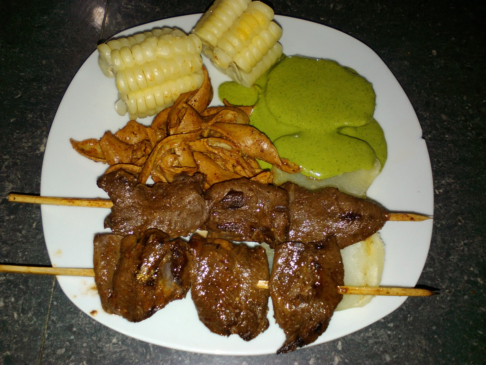
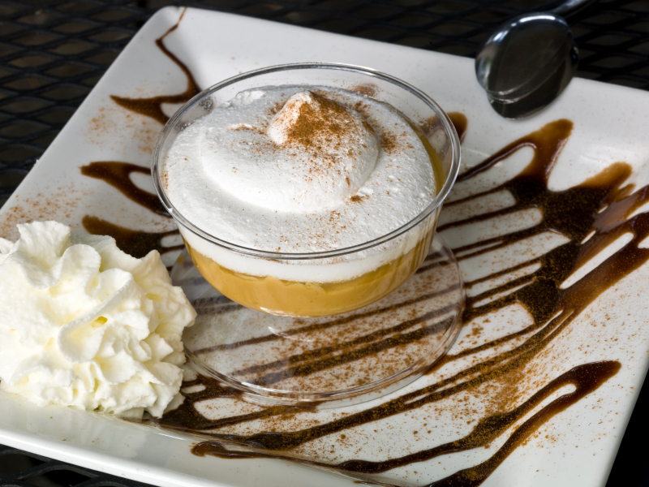

Anticucho
10 de Febrero 2018
El anticucho es un tipo de brocheta de origen peruano, que también es popular en algunos países sudamericanos con diferentes variaciones por país. Consiste en carne y otros alimentos que se asan ensartados en un pincho. Durante la época incaica, el anticucho se preparaba con trozos de carne de llama y se condimentaba con hierbas aromáticas y ají.
Alondra12: Se ve muy delicioso los anticuchos... =9
Bety_DT: El año pasado visite Perú y probe los anticuhos, simplemente delicioso.
Iris91: Gustazzo el mejor lugar para comer anticuchos , brochetas y otras exquisiteces recomendado.
Suspiro limeño
12 de Abril 2018
Este postre se origina a mediados del siglo XIX en la ciudad de Lima. El primer dato que se tiene respecto a su elaboración se encuentra reseñado en el Nuevo Diccionario Americano de Cocina del año 1868 bajo el nombre de Manjar Real del Perú. La historia de su elaboración se inicia con Amparo Ayarza, esposa del poeta José Gálvez Barrenechea, quien ideó la receta. El poeta bautiza el postre porque es suave y dulce como el suspiro de una mujer, así se conoce como suspiro de limeña.
Leonardo: No crei que era de esa epoca, ahora se mas sobre este delicioso postre.
Peter45: No hay nada como un suspiro limeño de postre, su sabor es unico.

Victoria: Un postre sencillo de preparar pero muy rico, no hay fin de semana que pase sin darme el gusto de comer uno.